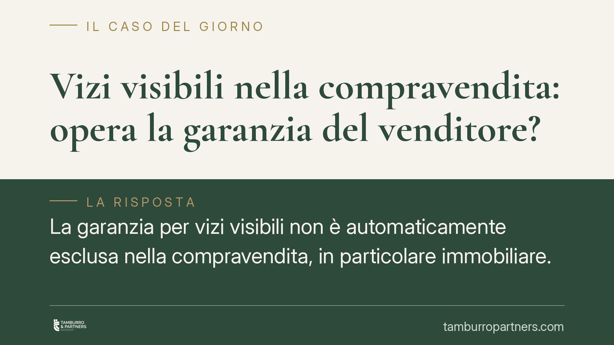

Vizi visibili nella compravendita: opera la garanzia del venditore?
La garanzia per vizi visibili non è automaticamente esclusa nella compravendita, in particolare immobiliare. Ciò che conta non è la semplice apparenza del difetto, ma se l'acquirente potesse conoscerne le cause interne. Una distinzione che incide su responsabilità del venditore, termini di denuncia e prova. Ecco cosa prevede il Codice civile e come muoversi.

La garanzia per vizi visibili: perché il tema è delicato
Quando si compra un bene, in particolare un immobile, l'acquirente si aspetta che sia esente da difetti che ne compromettono l'uso o il valore. Il Codice civile tutela questa aspettativa con la cosiddetta garanzia per vizi. Il punto critico riguarda i vizi visibili (o apparenti): il venditore ne risponde oppure la loro riconoscibilità libera automaticamente da responsabilità?
La risposta non è netta. La garanzia per vizi visibili non è esclusa in modo automatico. Occorre distinguere tra la percezione del difetto e la conoscibilità delle sue cause.
Inquadramento normativo
L'art. 1490 c.c. impone al venditore di garantire che la cosa venduta sia immune da vizi che la rendano inidonea all'uso cui è destinata o ne diminuiscano in modo apprezzabile il valore.
Il limite arriva dall'art. 1491 c.c.: la garanzia non è dovuta se, al momento del contratto, l'acquirente conosceva i vizi, oppure se questi erano facilmente riconoscibili. Fa eccezione l'ipotesi in cui il venditore abbia dichiarato che la cosa era esente da vizi.
La lettura consolidata della giurisprudenza di legittimità è che la garanzia opera anche di fronte a un difetto in parte percepibile, quando l'acquirente non era in grado di coglierne, con l'ordinaria diligenza, l'effettiva estensione o le cause interne. Un'infiltrazione visibile può nascondere un problema strutturale non riconoscibile a un esame ordinario: in questi casi il vizio non si considera "facilmente riconoscibile" nella sua reale portata.
Gli effetti sono regolati dall'art. 1492 c.c. (risoluzione del contratto o riduzione del prezzo, a scelta dell'acquirente) e dall'art. 1494 c.c. (risarcimento del danno, salvo prova del venditore di aver ignorato senza colpa i vizi).
Termini di decadenza e prescrizione
Qui si concentra l'errore più frequente. L'art. 1495 c.c. prevede due termini distinti:
- Denuncia: entro 8 giorni dalla scoperta del vizio, salvo diverso termine convenuto tra le parti;
- Prescrizione dell'azione: 1 anno dalla consegna del bene.
È una differenza sostanziale. Il termine annuale decorre dalla consegna, non dalla scoperta. Per gli immobili si applica questa disciplina della compravendita, distinta da quella dell'appalto (art. 1667 c.c.) e da quella delle vendite ai consumatori. Confondere i regimi porta spesso a perdere il diritto per decorso dei termini.
Implicazioni pratiche per l'acquirente
La distinzione tra vizio apparente e conoscibilità delle cause interne ha ricadute concrete.
Per l'acquirente significa che la presenza di un difetto "a vista" non chiude automaticamente la strada alla tutela. Occorre però dimostrare che, con la diligenza esigibile, non era possibile comprendere la reale gravità o l'origine del problema.
Per il venditore significa che una dichiarazione di assenza di vizi, o il silenzio su difetti di cui era a conoscenza, può fondare la responsabilità anche rispetto a problemi in parte visibili.
Sul piano probatorio, pesa la documentazione: perizie, fotografie, comunicazioni scambiate prima e dopo il rogito.
Cosa fare in concreto
- Fai ispezionare il bene da un tecnico prima dell'acquisto, con relazione scritta che dia conto dello stato apparente e dei limiti dell'esame.
- Denuncia i vizi entro 8 giorni dalla scoperta, in forma scritta e verificabile (PEC o raccomandata), descrivendo con precisione il difetto.
- Rispetta il termine annuale di prescrizione dalla consegna: non attendere, agisci con anticipo.
- Conserva ogni scambio con la controparte, comprese trattative e dichiarazioni sullo stato del bene.
- Verifica la disciplina applicabile (compravendita, appalto, vendita al consumatore) prima di impostare la pretesa: cambia i termini e i rimedi.
Una precisazione sulle fonti
Gli orientamenti richiamati riflettono la lettura consolidata degli artt. 1490 e 1491 c.c. in tema di vizi e loro riconoscibilità. Ogni fattispecie va valutata sulla base degli atti concreti e della giurisprudenza aggiornata al momento della controversia. Consigliamo di far esaminare la documentazione da un professionista prima di assumere iniziative.
Contributo informativo a cura di Tamburro & Partners - Avv. Giuseppe Tamburro. Non costituisce parere legale.
Ogni contratto ha il suo equilibrio.
Se vuoi una revisione delle clausole o una redazione su misura, scrivi allo studio. Ti rispondiamo entro un giorno lavorativo.